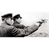

<!DOCTYPE html>
<html lang="en">
 <head>
<!-- Favicon -->
<link rel="shortcut icon" href="../../favicon.ico">
  <meta charset="utf-8"/>
  <title>
   Stalinist Mass Murder and the Warping of Russian History - Jew Lazar Kaganovich by whom some 100,000,000 souls perished in Russia and the Ukraine was the power behind Stalin's throne, by Sever Plocker
  </title>
  <meta content="Post on /v/Conspiracy from 2019-04-12 by MartinTimothy." name="description"/>
  <meta content="Stalinist Mass Murder and the Warping of Russian History - Jew Lazar Kaganovich by whom some 100,000,000 souls perished in Russia and the Ukraine was the power behind Stalin's throne, by Sever Plocker" property="og:title"/>
  <meta content="Post on /v/Conspiracy from 2019-04-12 by MartinTimothy." property="og:description"/>
  <link href="../../static/css/page.css" rel="stylesheet"/>
  <meta content="https://voat.conspiracy.hackliberty.org/thumbnails/b3/d9/b3d92803-bf6c-4134-a9f1-789f899b9a76.png" property="og:image"/>
  <meta content="https://voat.conspiracy.hackliberty.org/v/conspiracy/3155705.html" property="og:url"/>
  <meta content="width=device-width, initial-scale=1" name="viewport"/>
  <link href="https://voat.conspiracy.hackliberty.org/v/conspiracy/3155705.html" rel="canonical"/>
  <meta content="article" property="og:type"/>
  <meta content="Voat /v/Conspiracy Archive" property="og:site_name"/>
  <meta content="en_US" property="og:locale"/>
  <meta content="summary_large_image" name="twitter:card"/>
  <meta content="Stalinist Mass Murder and the Warping of Russian History - Jew Lazar Kaganovich by whom some 100,000,000 souls perished in Russia and the Ukraine was the power behind Stalin's throne, by Sever Plocker" name="twitter:title"/>
  <meta content="Post on /v/Conspiracy from 2019-04-12 by MartinTimothy." name="twitter:description"/>
  <meta content="https://voat.conspiracy.hackliberty.org/thumbnails/b3/d9/b3d92803-bf6c-4134-a9f1-789f899b9a76.png" name="twitter:image"/>
 </head>
</html>
<body class="dark">
 <header>
  <nav class="navbar navbar-dark bg-primary">
    <a class="navbar-brand" href="../../index.html">/v/Conspiracy Archive</a>
    <div class="navbar-collapse">
      <ul class="navbar-nav">
        <li class="nav-item">
          <a class="nav-link" href="../../date/page-1.html">Date</a>
        </li>
        <li class="nav-item">
          <a class="nav-link" href="../../comments/page-1.html">Comments</a>
        </li>
        <li class="nav-item">
          <a class="nav-link" href="../../search.html">Search</a>
        </li>
        <li class="nav-item dropdown">
          <a class="nav-link dropdown-toggle" href="#" id="navbarDropdown" role="button" 
             data-toggle="dropdown" aria-haspopup="true" aria-expanded="false">
            subreddits
          </a>
          <div class="dropdown-menu" aria-labelledby="navbarDropdown">
            <a class="dropdown-item" href="https://reddit.conspiracy.hackliberty.org">r/conspiracy</a>
            <a class="dropdown-item" href="https://reddit.pizzagate.hackliberty.org">r/pizzagate</a>
            <a class="dropdown-item" href="https://voat.conspiracy.hackliberty.org">v/conspiracy</a>
            <a class="dropdown-item" href="https://voat.pizzagate.hackliberty.org">v/pizzagate</a>
          </div>
        </li>
      </ul>
    </div>
  </nav>
</header>

 <div id="container">
  <!-- array (
  'submissionid' => 3155705,
  'creationDate' => '2019-04-12 23:48:21',
  'domain' => 'sovereignukraine.net',
  'formattedContent' => NULL,
  'isAdult' => 0,
  'isAnonymized' => 0,
  'subverse' => 'Conspiracy',
  'thumbnail' => 'b3d92803-bf6c-4134-a9f1-789f899b9a76.png',
  'title' => 'Stalinist Mass Murder and the Warping of Russian History - Jew Lazar Kaganovich by whom some 100,000,000 souls perished in Russia and the Ukraine was the power behind Stalin\'s throne, by Sever Plocker',
  'url' => 'https://sovereignukraine.net/stalinist-mass-murder-and-the-warping-of-russian-history/',
  'userName' => 'MartinTimothy',
  'archivedLink' => NULL,
  'archivedDomain' => NULL,
  'isDeleted' => 0,
) --><div class="content" role="main">
   <div class="sitetable linklisting" id="siteTable">
    <div class="submission id-3155705 link type-text" id="submission-3155705">
     <a name="submissionTop">
     </a>
     <p class="parent">
     </p>
     <a class="thumbnail may-blank" href="https://sovereignukraine.net/stalinist-mass-murder-and-the-warping-of-russian-history/" target="_self">
      
     </a>
     <div class="entry unvoted">
      <p class="title">
       <a class="title may-blank" href="https://sovereignukraine.net/stalinist-mass-murder-and-the-warping-of-russian-history/" tabindex="1" target="_self" title="Stalinist Mass Murder and the Warping of Russian History - Jew Lazar Kaganovich by whom some 100,000,000 souls perished in Russia and the Ukraine was the power behind Stalin's throne, by Sever Plocker">
        Stalinist Mass Murder and the Warping of Russian History - Jew Lazar Kaganovich by whom some 100,000,000 souls perished in Russia and the Ukraine was the power behind Stalin's throne, by Sever Plocker
       </a>
       <span class="domain">
        (
        <a href="https://archive.searchvoat.co/search.php?d=sovereignukraine.net">
         sovereignukraine.net
        </a>
        )
       </span>
      </p>
      <p class="tagline">
       submitted
       <time datetime="2019-04-12T23:48:21+00:00" title="04/12/2019 11:48:21 PM">
        2019-04-12T23:48
       </time>
       by
       <span class="userattrs">
        <a class="author may-blank" href="https://archive.searchvoat.co/search.php?u=MartinTimothy">
         MartinTimothy
        </a>
       </span>
      </p>
      <ul class="flat-list buttons">
       <li class="first">
        <a class="comments may-blank" href="https://archive.searchvoat.co/v/Conspiracy/3155705" rel="nofollow">
         1 comment
        </a>
       </li>
      </ul>
     </div>
     <div class="child">
     </div>
     <div class="clearleft">
     </div>
    </div>
    <div class="clearleft">
    </div>
   </div>
   <div class="horizontal-line">
   </div>
   <div class="commentarea">
    <div class="sitetable nestedlisting" id="siteTable">
     <div class="child id-17992033 comment even" style="">
      <div class="entry unvoted">
       <div class="noncollapsed" id="17992033" style=";">
        <p class="tagline">
         <a class="author may-blank" href="https://archive.searchvoat.co/search.php?u=MartinTimothy">
          MartinTimothy
         </a>
         <span class="userattrs">
         </span>
         <time datetime="2019-04-12T23:49:00+00:00" title="4/12/2019 11:49:00 PM">
          2019-04-12T23:49
         </time>
        </p>
        <div class="usertext-body may-blank-within" id="commentContent-17992033">
         <div class="md">
          <p>
           <blockquote>
            <p>
             The policing apparatus in the Soviet Union since the 1917 Revolution was in the hands of Jews, Lazar Kaganovich by whom one hundred million souls perished in Russia and the Ukraine was the power behind Stalin's throne, like Jews are the power behind Trump's throne.
            </p>
           </blockquote>
           <p>
            <strong>
             <a href="https://www.ynetnews.com/articles/0,7340,L-3342999,00.html">
              Stalin's Jews by Sever Plocker at YNetNews
             </a>
             .. We mustn't forget that some of greatest murderers of modern times were Jewish.
            </strong>
           </p>
           <blockquote>
            <p>
             Here's a particularly forlorn historical date, almost 90 years ago between the 19th and 20th of December 1917 in the midst of the Bolshevik revolution and civil war, Lenin signed a decree calling for the establishment of The All Russian Extraordinary Commission for Combating Counter Revolution and Sabotage, also known as Cheka.
            </p>
            <p>
             Within a short period of time Cheka became the largest and cruelest state security organization, its organizational structure was changed every few years as were its names. From Cheka to GPU, later to NKVD and later to KGB. We cannot know with certainty the number of deaths Cheka was responsible for in its various manifestations, but the number is surely at least 20 million.
            </p>
           </blockquote>
           <p>
            <strong>
             Including victims of the forced collectivization, the hunger, large purges, expulsions, banishments, executions and mass death at Gulags.
            </strong>
           </p>
           <blockquote>
            <p>
             Whole population strata were eliminated, independent farmers, ethnic minorities, members of the bourgeoisie, senior officers, intellectuals, artists, labor movement activists, "opposition members" who were defined completely randomly and countless members of the Communist party itself.
            </p>
            <p>
             In his new highly praised book "The War of the World, "Historian Niall Ferguson writes that no revolution in the history of mankind devoured its children with the same unrestrained appetite as did the Soviet revolution.
            </p>
            <p>
             In his book on the Stalinist purges, Tel Aviv University's Dr. Igal Halfin writes that Stalinist violence was unique in that it was directed internally. Lenin, Stalin and their successors could not have carried out their deeds without wide scale cooperation of disciplined "terror officials.
            </p>
           </blockquote>
           <p>
            <strong>
             "Cruel interrogators, snitches, executioners, guards, judges, perverts and many bleeding hearts!
            </strong>
           </p>
           <blockquote>
            <p>
             Members of the progressive Western Left who were deceived by the Soviet regime of horror and even provided it with a kosher certificate, all these things are well known to some extent or another, even though the former Soviet Union's archives have not yet been fully opened.
            </p>
            <p>
             Who knows about this? Within Russia itself very few people have been brought to justice for their crimes in the NKVD's and KGB's service. The Russian public discourse today completely ignores the question of "how could it have happened to us?"
            </p>
            <p>
             As opposed to Eastern European nations the Russians did not settle the score with their Stalinist past. And us, the Jews? An Israeli student finishes high school without ever hearing the name "Genrikh Yagoda," the greatest Jewish murderer of the 20th Century.
            </p>
           </blockquote>
           <p>
            <strong>
             The GPU's deputy commander and the founder and commander of the NKVD, Yagoda diligently implemented Stalin's collectivization orders!
            </strong>
           </p>
           <blockquote>
            <p>
             He is responsible for the deaths of at least 10 million people, whose Jewish deputies established and managed the Gulag system, after Stalin no longer viewed him favorably Yagoda was demoted, executed, and replaced as chief hangman in 1936 by Yezhov the "bloodthirsty dwarf."
            </p>
            <p>
             Yezhov was not Jewish but was blessed with an active Jewish wife, in his book "Stalin, Court of the Red Star", Jewish historian Sebag Montefiore writes that during the darkest period of terror when the Communist killing machine worked in full force, Stalin was surrounded by beautiful, young Jewish women.
            </p>
            <p>
             Stalin's close associates and loyalists included member of the Central Committee and Politburo Lazar Kaganovich. Montefiore characterizes him as the "first Stalinist" and adds that those starving to death in Ukraine, an unparalleled tragedy in the history of humankind, aside from the Nazi horrors and Mao's terror in China, did not move Kaganovich.
            </p>
           </blockquote>
           <p>
            <strong>
             Many Jews sold their soul to the devil of the Communist revolution, and have blood on their hands for eternity.
            </strong>
           </p>
           <blockquote>
            <p>
             We'll mention just one more, Leonid Reichman head of the NKVD's Special Department and the organization's chief interrogator, who was a particularly cruel sadist. In 1934, according to published statistics 38.5 percent of those holding the most senior posts in the Soviet security apparatuses were of Jewish origin.
            </p>
            <p>
             They too of course were gradually eliminated in the next purges. In a fascinating lecture at a Tel Aviv University convention this week, Dr. Halfin described the waves of soviet terror as a "carnival of mass murder," "fantasy of purges", and "essianism of evil."
            </p>
            <p>
             Turns out that Jews too when they become captivated by messianic ideology, can become great murderers, among the greatest known by modern history. The Jews active in official communist terror apparatuses in the Soviet Union and abroad, who at times led them did not do this, obviously as Jews.
            </p>
           </blockquote>
           <p>
            <strong>
             But rather as Stalinists, Communists and "Soviet People," therefore we find it easy to ignore their origin and "play dumb."
            </strong>
           </p>
           <blockquote>
            <p>
             What do we have to do with them? But let's not forget them. My own view is different, I find it unacceptable that a person will be considered a member of the Jewish people when he does great things, but not considered part of our people when he does amazingly despicable things.
            </p>
            <p>
             Even if we deny it, we cannot escape the Jewishness of "our hangmen," who served the Red Terror with loyalty and dedication from its establishment. After all, others will always remind us of their origin. Sever Plocker.
            </p>
           </blockquote>
           <p>
            As well
            <a href="http://magaimg.net/img/6ntj.png">
             Dietrich Bronder
            </a>
            assures us
            <a href="https://just-another-inside-job.blogspot.com/2004/03/adolph-hitler-jew.html">
             Adolf Hitler
            </a>
            and all of the top Nazis were Jews.
           </p>
          </p>
         </div>
        </div>
        <ul class="flat-list buttons">
         <li class="first">
          <a class="bylink" href="https://archive.searchvoat.co/v/Conspiracy/3155705/17992033" rel="nofollow">
           link
          </a>
         </li>
        </ul>
       </div>
      </div>
     </div>
    </div>
   </div>
  </div>
 </div>
<!-- Footer Section -->
<footer class="container-fluid mt-3">
  <p class="small mb-0">
    /v/conspiracy archive has 42504 posts and 159856 total comments.
    <a href="https://git.hackliberty.org/c0mmando/voat-conspiracy-archive/">source code</a>.
  </p>
</footer>

<script src="../../static/js/jquery-3.7.1.slim.min.js"></script>
<script src="../../static/js/comments-toggle.js"></script>

</body>
